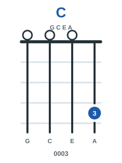

トニック（T） · I
帰ってきた、落ち着く場所。出発点にも、終止の到着点にもなります。
しくみを知り、音と結びつけよう。
答えるたびに、響きと理由をたしかめよう。
ストーリーで音を思い出したり、最後まで答えてまとめて振り返ろう。
このブラウザの全Stageの学習記録と、続きの位置を消します。
学ぶ · 機能和声
コードには、響きの種類とは別に、曲の中での役割があります。その役割を「機能」と呼びます。まずは長調の I・IV・V / V7 を、転調しない短い進行で聞いてみよう。
C長調の音階は C・D・E・F・G・A・B（ド・レ・ミ・ファ・ソ・ラ・シ）。三和音は、根音・3度・5度を重ねた和音です。CはC–E–G、AmはA–C–E。長三和音と短三和音は、3度などの音の間隔が異なります。
度数は調の中の位置。長三和音は I のように大文字、短三和音は vi のように小文字で表します。コードの種類とT/S/Dの機能は別に考えます。
C長調なら C が主和音 I。I → IV → V7 → I と聞くと、最後の I に帰る感覚をつかみやすくなります。ローマ数字は、コードの根音がその調の何番目の音かを表します。
C長調: I（C）→ IV（F）→ V7（G7）→ I（C）
帰ってきた、落ち着く場所。出発点にも、終止の到着点にもなります。
帰る場所から外へ広がる役割。Vへつなぐほか、IV → Iでやわらかく帰ることもあります。
Iへの解決を待つ役割。V7の第7音も、次へ動きたい響きを強めます。
すべてメジャーの三和音でも I・IV・V の役割は違います。「明るいからトニック」とは決められません。
C長調では C は I、F長調では V、G長調では IV。コード名だけで機能は決まりません。調を示す進行全体と、前後への動きを聞きます。
V / V7 → I はドミナントから主和音へ解決する終止です。IV → I は変格終止と呼ばれ、違う帰り方を作ります。ここではまず主調を示してから、2つの結びを比べます。
実際の曲ではリズム、旋律、転回形、前後の和音も解釈に関わります。iii・vi などには文脈で複数の役割が考えられるため、今回の3択では扱いません。
音例のボタンを押すと、進行と役割を表示しながら再生します。
実践する · 機能和声
主調の終止と問題の進行を聞き、★の和音の役割を選びます。途中では正解や点数を表示しません。
画面を移動すると音は止まります。途中の回答はこのページ内で保持し、「途中終了」で消します。再読み込みでは消えます。
練習する · 機能和声
同じメジャーコードでも、調と進行が変わると役割が変わります。最初に I → IV → V7 → I で帰る場所を聞いてから、問題の進行の ★ の和音に注目しよう。
I はトニック、IV はサブドミナント、V / V7 はドミナント。たとえば C は C長調では I、F長調では V、G長調では IV です。コード名だけで役割は決まりません。
今回は転調のない長調の基本形を練習します。iii・vi など役割の解釈が分かれる和音は出題しません。記録はこの画面を開いている間だけ。レベルを変えると回数がゼロになります。
いまの歩き方
1つのコードを、鳥・音・コード図・きもちでゆっくり見る。
まずは青い「音をきく」から。
Major C

ほっと帰れる明るさ
ちがいを聞く
近いコードを順番に聞いて、空気の違いを耳に残す。
音をきく
こたえ
ほっと帰れる明るさ
音をきいてえらぶ
0 / 0
流れできく
鳥たちが並ぶと、曲の景色が少し見えてくる。